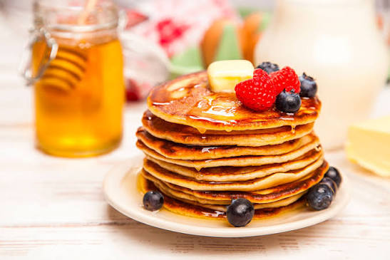

Pancakes Soffici alla Americana
Deliziose frittelle soffici e alte, perfette per una colazione ricca e golosa. Ottime da gustare calde con uno sciroppo d'acero, frutta fresca, crema spalmabile o nella loro irresistibile variante al cacao.

Ingredienti
- 150g di Farina 00 (o 130g di farina e 20g di cacao amaro in polvere per la versione al cacao)
- 200ml di Latte a temperatura ambiente
- 2 Uova medie
- 30g di Zucchero semolato (puoi portarli a 40g se preferisci la versione al cacao più dolce)
- 50g di Burro fuso (o olio di semi)
- 1 bustina di Lievito in polvere per dolci (circa 8g)
- 1 pizzico di Sale fino
Farciture Consigliate:
- q.b. Sciroppo d'acero, miele, mirtilli freschi, cioccolato fuso, crema spalmabile o zucchero a velo.
Procedimento
- Preparazione della base: In una ciotola capiente unisci le uova con lo zucchero e sbatti con una frusta a mano fino a renderle spumose. Aggiungi il latte e il burro fuso tiepido continuando a mescolare.
- Aggiungere le polveri: Setaccia la farina insieme al lievito e al pizzico di sale (se opti per la variante al cacao, unisci e setaccia anche i 20g di cacao amaro insieme alla farina), quindi unisci il tutto poco alla volta al composto liquido, mescolando delicatamente per evitare la formazione di grumi.
- Montare gli albumi (opzionale): Se desideri pancake ancora più soffici, puoi montare gli albumi a neve ferma in un'altra ciotola e incorporarli all'impasto con movimenti dal basso verso l'alto.
- Cottura: Scalda una padella antiaderente a fuoco medio e ungila appena con un velo di burro o olio (rimuovendo l'eccesso con carta assorbente). Versa un mestolo di impasto al centro della padella.
- La doratura: Aspetta che in superficie inizino a formarsi delle piccolissime bollicine e i bordi appaiano asciutti (circa 2 minuti), quindi gira il pancake con una spatola.
- Ultimare la cottura: Cuoci l'altro lato per un altro minuto circa. Prosegui in questo modo fino a terminare tutto l'impasto.
- Servizio: Impila i pancakes caldi uno sopra l'altro e guarniscili a piacere con sciroppo d'acero, frutta o gocce di cioccolato.
💡 Note Finali e Consigli dell'Mastro Pasticcere
- Variante al cacao: Per ottenere dei perfetti pancakes al cioccolato, basta sostituire 20g di farina con altrettanto cacao amaro di buona qualità. Essendo il cacao leggermente più asciutto, puoi valutare di aggiungere un goccio di latte in più se l'impasto dovesse risultare troppo denso.
- La padella giusta: È fondamentale usare una padella perfettamente antiaderente e pulita, senza aggiungere troppo grasso, per ottenere una doratura uniforme e liscia.
- Consumazione: I pancakes danno il meglio di sé se consumati caldi e appena fatti.